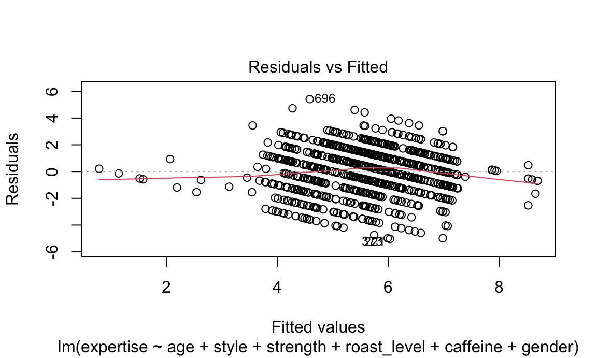
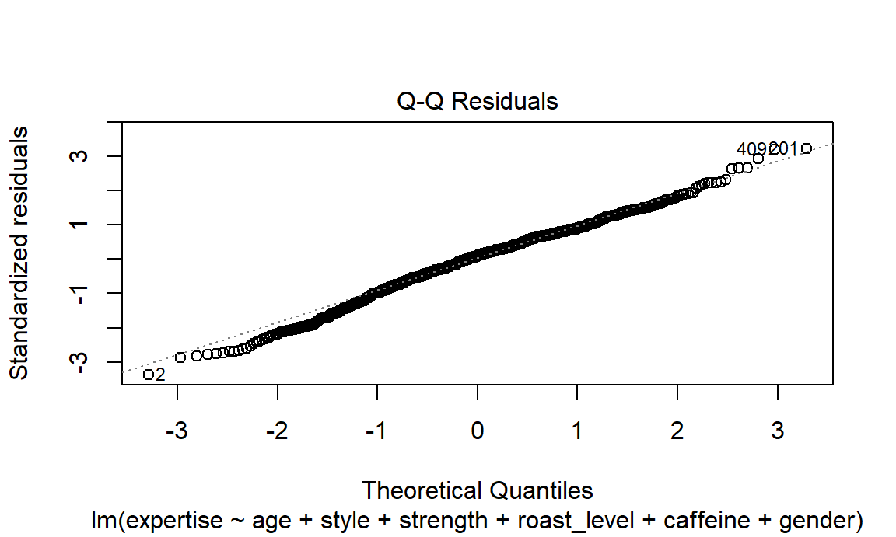
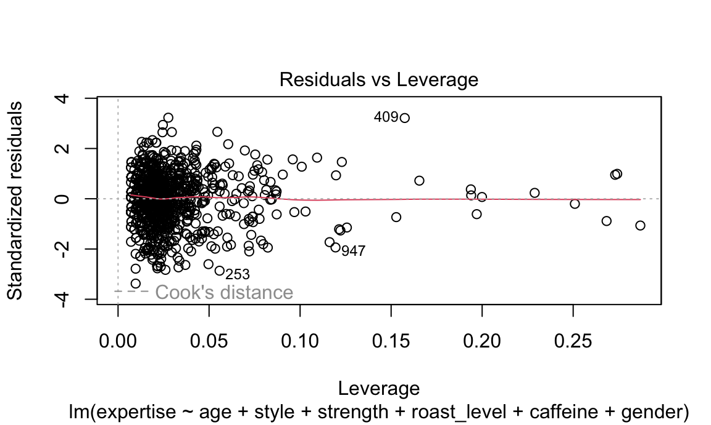

survey_model = survey_tidy |>
distinct(submission_id, .keep_all = TRUE) |>
select(expertise, age, favorite, style, strength, roast_level,
caffeine, gender, education_level) |>
na.omit() |>
filter(
gender %in% c("Male", "Female", "Non-binary"),
age != "<18 years old"
) |>
slice_sample(n = 1000)
x = model.matrix(expertise ~ ., data = survey_model)[, -1]
y = survey_model |> pull(expertise)
lambda = 10^seq(-2, 2.75, by = 0.1)
lasso_fit =
glmnet(x = x, y = y, lambda = lambda)
lasso_cv =
cv.glmnet(x = x, y = y, lambda = lambda)
## lambda of the best fit
lambda_opt = lasso_cv[["lambda.min"]]
lasso_fit_best =
glmnet(x = x, y = y, lambda = lambda_opt)
lasso_fit_best |>
broom::tidy() |>
print(n = 50)## # A tibble: 30 × 5
## term step estimate lambda dev.ratio
## <chr> <dbl> <dbl> <dbl> <dbl>
## 1 (Intercept) 1 4.24 0.0398 0.283
## 2 age35-44 years old 1 0.150 0.0398 0.283
## 3 favoriteBlended drink 1 -1.65 0.0398 0.283
## 4 favoriteEspresso 1 0.313 0.0398 0.283
## 5 favoriteLatte 1 -0.0491 0.0398 0.283
## 6 favoriteMocha 1 -0.0218 0.0398 0.283
## 7 favoriteOther 1 -0.448 0.0398 0.283
## 8 favoritePourover 1 0.488 0.0398 0.283
## 9 styleBright 1 0.145 0.0398 0.283
## 10 styleCaramalized 1 -0.0286 0.0398 0.283
## 11 styleChocolatey 1 -0.197 0.0398 0.283
## 12 styleFloral 1 0.105 0.0398 0.283
## 13 styleFruity 1 0.470 0.0398 0.283
## 14 styleJuicy 1 0.721 0.0398 0.283
## 15 styleNutty 1 -0.0262 0.0398 0.283
## 16 styleSweet 1 -0.256 0.0398 0.283
## 17 strengthSomewhat light 1 -0.486 0.0398 0.283
## 18 strengthSomewhat strong 1 0.223 0.0398 0.283
## 19 strengthVery strong 1 0.377 0.0398 0.283
## 20 strengthWeak 1 -0.641 0.0398 0.283
## 21 roast_levelDark 1 -0.232 0.0398 0.283
## 22 roast_levelItalian 1 -1.80 0.0398 0.283
## 23 roast_levelLight 1 0.335 0.0398 0.283
## 24 roast_levelNordic 1 1.23 0.0398 0.283
## 25 caffeineFull caffeine 1 0.296 0.0398 0.283
## 26 genderMale 1 0.925 0.0398 0.283
## 27 genderNon-binary 1 0.250 0.0398 0.283
## 28 education_levelMaster's degree 1 0.0429 0.0398 0.283
## 29 education_levelHigh school graduate 1 -0.0900 0.0398 0.283
## 30 education_levelLess than high school 1 -0.602 0.0398 0.283full_mlr = lm(expertise ~ age + favorite + style + strength + roast_level +
caffeine + gender + education_level, data = survey_model)
step(full_mlr, direction = "backward")
final_mlr = lm(expertise ~ age + style + strength + roast_level +
caffeine + gender, data = survey_model)summary(final_mlr)##
## Call:
## lm(formula = expertise ~ age + style + strength + roast_level +
## caffeine + gender, data = survey_model)
##
## Residuals:
## Min 1Q Median 3Q Max
## -5.6983 -0.9691 0.1693 1.1485 5.3969
##
## Coefficients:
## Estimate Std. Error t value Pr(>|t|)
## (Intercept) 3.40865 0.69392 4.912 1.06e-06 ***
## age55-64 years old 0.38326 0.48827 0.785 0.43268
## age45-54 years old 0.33763 0.46016 0.734 0.46329
## age35-44 years old 0.51142 0.43555 1.174 0.24060
## age25-34 years old 0.34881 0.42752 0.816 0.41476
## age18-24 years old 0.17634 0.45037 0.392 0.69548
## styleBright 0.30973 0.30182 1.026 0.30504
## styleCaramalized -0.14112 0.30406 -0.464 0.64268
## styleChocolatey -0.25743 0.25783 -0.998 0.31832
## styleFloral 0.35828 0.33556 1.068 0.28592
## styleFruity 0.60670 0.26798 2.264 0.02379 *
## styleFull Bodied -0.01966 0.27180 -0.072 0.94235
## styleJuicy 0.97118 0.33358 2.911 0.00368 **
## styleNutty -0.17215 0.30508 -0.564 0.57269
## styleSweet -0.44537 0.30622 -1.454 0.14616
## strengthSomewhat light -0.68429 0.26246 -2.607 0.00927 **
## strengthSomewhat strong 0.35949 0.12348 2.911 0.00368 **
## strengthVery strong 0.59004 0.18832 3.133 0.00178 **
## strengthWeak -1.18116 0.57079 -2.069 0.03878 *
## roast_levelDark -0.25807 0.45515 -0.567 0.57084
## roast_levelFrench -0.17632 0.95698 -0.184 0.85386
## roast_levelItalian -1.75273 0.82785 -2.117 0.03450 *
## roast_levelLight 0.52417 0.41817 1.253 0.21033
## roast_levelMedium 0.11805 0.41879 0.282 0.77810
## roast_levelNordic 1.77017 0.54472 3.250 0.00119 **
## caffeineHalf caff 0.21652 0.38015 0.570 0.56910
## caffeineFull caffeine 0.56743 0.32050 1.770 0.07696 .
## genderMale 1.07990 0.13424 8.045 2.51e-15 ***
## genderNon-binary 0.50948 0.32313 1.577 0.11519
## ---
## Signif. codes: 0 '***' 0.001 '**' 0.01 '*' 0.05 '.' 0.1 ' ' 1
##
## Residual standard error: 1.696 on 971 degrees of freedom
## Multiple R-squared: 0.2603, Adjusted R-squared: 0.2389
## F-statistic: 12.2 on 28 and 971 DF, p-value: < 2.2e-16plot(final_mlr, which = 1)
plot(final_mlr, which = 2)
plot(final_mlr, which = 5)
library("MASS")
contingency_table = xtabs(expertise ~ age + style + strength + roast_level +
caffeine + gender, data = survey_model)
print(contingency_table)
stepwise_model = step(loglm(expertise ~ (age + style + strength + roast_level +
caffeine + gender)^2,
data = contingency_table))
detach("package:MASS", unload = TRUE)summary(stepwise_model)## Formula:
## expertise ~ (age + style + strength + roast_level + caffeine +
## gender)^2
## attr(,"variables")
## list(expertise, age, style, strength, roast_level, caffeine,
## gender)
## attr(,"factors")
## age style strength roast_level caffeine gender age:style
## expertise 0 0 0 0 0 0 0
## age 1 0 0 0 0 0 1
## style 0 1 0 0 0 0 1
## strength 0 0 1 0 0 0 0
## roast_level 0 0 0 1 0 0 0
## caffeine 0 0 0 0 1 0 0
## gender 0 0 0 0 0 1 0
## age:strength age:roast_level age:caffeine age:gender style:strength
## expertise 0 0 0 0 0
## age 1 1 1 1 0
## style 0 0 0 0 1
## strength 1 0 0 0 1
## roast_level 0 1 0 0 0
## caffeine 0 0 1 0 0
## gender 0 0 0 1 0
## style:roast_level style:caffeine style:gender strength:roast_level
## expertise 0 0 0 0
## age 0 0 0 0
## style 1 1 1 0
## strength 0 0 0 1
## roast_level 1 0 0 1
## caffeine 0 1 0 0
## gender 0 0 1 0
## strength:caffeine strength:gender roast_level:caffeine
## expertise 0 0 0
## age 0 0 0
## style 0 0 0
## strength 1 1 0
## roast_level 0 0 1
## caffeine 1 0 1
## gender 0 1 0
## roast_level:gender caffeine:gender
## expertise 0 0
## age 0 0
## style 0 0
## strength 0 0
## roast_level 1 0
## caffeine 0 1
## gender 1 1
## attr(,"term.labels")
## [1] "age" "style" "strength"
## [4] "roast_level" "caffeine" "gender"
## [7] "age:style" "age:strength" "age:roast_level"
## [10] "age:caffeine" "age:gender" "style:strength"
## [13] "style:roast_level" "style:caffeine" "style:gender"
## [16] "strength:roast_level" "strength:caffeine" "strength:gender"
## [19] "roast_level:caffeine" "roast_level:gender" "caffeine:gender"
## attr(,"order")
## [1] 1 1 1 1 1 1 2 2 2 2 2 2 2 2 2 2 2 2 2 2 2
## attr(,"intercept")
## [1] 1
## attr(,"response")
## [1] 1
## attr(,".Environment")
## <environment: R_GlobalEnv>
##
## Statistics:
## X^2 df P(> X^2)
## Likelihood Ratio 6955.078 36332 1
## Pearson NaN 36332 NaNcoffee_ad_df =
survey_tidy %>%
distinct(submission_id, prefer_ad, gender, age, expertise, style, strength, caffeine) %>%
filter(
gender %in% c("Male", "Female", "Non-binary"),
age != "<18 years old"
) %>%
mutate(prefer_ad = if_else(prefer_ad == "Coffee D", 1, 0))
bootstraps_ad =
coffee_ad_df %>%
bootstrap(100) %>%
mutate(
strap = map(strap, as_tibble),
models = map(strap, \(df) glm(prefer_ad ~ gender + age + expertise + style +
strength + caffeine, data = df, family = "binomial")),
results = map(models, broom::tidy)
) %>%
select(.id, results) %>%
unnest(results)
ad_results =
bootstraps_ad %>%
group_by(term) %>%
summarize(
boot_mean = mean(estimate),
boot_se = sd(estimate)
)
ad_results %>%
knitr::kable(digits = 3)| term | boot_mean | boot_se |
|---|---|---|
| (Intercept) | -1.044 | 0.394 |
| age18-24 years old | 1.058 | 0.331 |
| age25-34 years old | 1.080 | 0.320 |
| age35-44 years old | 0.898 | 0.321 |
| age45-54 years old | 0.581 | 0.324 |
| age55-64 years old | 0.510 | 0.360 |
| caffeineFull caffeine | -0.625 | 0.214 |
| caffeineHalf caff | -0.755 | 0.264 |
| expertise | 0.031 | 0.021 |
| genderMale | 0.127 | 0.094 |
| genderNon-binary | 0.487 | 0.249 |
| strengthSomewhat light | 0.072 | 0.193 |
| strengthSomewhat strong | 0.143 | 0.076 |
| strengthVery strong | 0.190 | 0.128 |
| strengthWeak | -0.162 | 0.399 |
| styleBright | 0.407 | 0.199 |
| styleCaramalized | -0.369 | 0.196 |
| styleChocolatey | 0.239 | 0.179 |
| styleFloral | 0.347 | 0.212 |
| styleFruity | 1.404 | 0.178 |
| styleFull Bodied | 0.070 | 0.178 |
| styleJuicy | 1.025 | 0.202 |
| styleNutty | 0.000 | 0.195 |
| styleSweet | 0.215 | 0.211 |
bootstraps_ad %>%
mutate(term = fct_reorder(term, estimate)) %>%
group_by(term) %>%
plot_ly(x = ~estimate,
color = ~term,
type = "box",
colors = "viridis",
showlegend = FALSE) %>%
layout(title = "Distribution of terms",
xaxis = list(title = "Estimate"),
yaxis = list(title = "Term"))# Prepare coefficients
intercept =
ad_results %>%
filter(term == "(Intercept)") %>%
pull(boot_mean)
coefs =
ad_results %>%
filter(term != "(Intercept)") %>%
select(term, boot_mean) %>%
deframe() # Converts to named vector
new_data =
coffee_ad_df %>%
filter(submission_id == "WApbYk") %>%
select(-submission_id, -prefer_ad) %>%
model.matrix(~ . - 1, data = .) %>%
as_tibble()
# Compute logit (linear predictor)
logit = intercept + sum(coefs * new_data)
# Convert logit to probability
predicted_prob <- 1 / (1 + exp(-logit))
predicted_prob## [1] 0.8456179survey_anova = survey_tidy |>
select(coffee_name, bitterness, acidity, preference) |>
na.omit() |>
slice_sample(n = 1000)anova_bitterness = aov(bitterness ~ coffee_name, data = survey_anova)
summary(anova_bitterness)## Df Sum Sq Mean Sq F value Pr(>F)
## coffee_name 3 227.6 75.88 74.76 <2e-16 ***
## Residuals 996 1010.9 1.01
## ---
## Signif. codes: 0 '***' 0.001 '**' 0.01 '*' 0.05 '.' 0.1 ' ' 1pairwise_bitterness = pairwise.t.test(survey_anova$bitterness, survey_anova$coffee_name,
p.adjust.method = "bonferroni")
survey_anova |>
group_by(coffee_name) |>
summarise(
mean_bitterness = mean(bitterness))## # A tibble: 4 × 2
## coffee_name mean_bitterness
## <fct> <dbl>
## 1 Coffee A 2.07
## 2 Coffee B 3.04
## 3 Coffee C 3.03
## 4 Coffee D 2.09print(pairwise_bitterness)##
## Pairwise comparisons using t tests with pooled SD
##
## data: survey_anova$bitterness and survey_anova$coffee_name
##
## Coffee A Coffee B Coffee C
## Coffee B <2e-16 - -
## Coffee C <2e-16 1 -
## Coffee D 1 <2e-16 <2e-16
##
## P value adjustment method: bonferronianova_acidity = aov(acidity ~ coffee_name, data = survey_anova)
summary(anova_acidity)## Df Sum Sq Mean Sq F value Pr(>F)
## coffee_name 3 514.4 171.47 197.3 <2e-16 ***
## Residuals 996 865.5 0.87
## ---
## Signif. codes: 0 '***' 0.001 '**' 0.01 '*' 0.05 '.' 0.1 ' ' 1pairwise_acidity = pairwise.t.test(survey_anova$acidity, survey_anova$coffee_name,
p.adjust.method = "bonferroni")
survey_anova |>
group_by(coffee_name) |>
summarise(
mean_acidity = mean(acidity))## # A tibble: 4 × 2
## coffee_name mean_acidity
## <fct> <dbl>
## 1 Coffee A 3.66
## 2 Coffee B 2.31
## 3 Coffee C 2.35
## 4 Coffee D 3.86print(pairwise_acidity)##
## Pairwise comparisons using t tests with pooled SD
##
## data: survey_anova$acidity and survey_anova$coffee_name
##
## Coffee A Coffee B Coffee C
## Coffee B <2e-16 - -
## Coffee C <2e-16 1.00 -
## Coffee D 0.08 <2e-16 <2e-16
##
## P value adjustment method: bonferronianova_preference = aov(preference ~ coffee_name, data = survey_anova)
summary(anova_preference)## Df Sum Sq Mean Sq F value Pr(>F)
## coffee_name 3 25.7 8.563 5.87 0.000567 ***
## Residuals 996 1452.8 1.459
## ---
## Signif. codes: 0 '***' 0.001 '**' 0.01 '*' 0.05 '.' 0.1 ' ' 1pairwise_preference = pairwise.t.test(survey_anova$preference, survey_anova$coffee_name,
p.adjust.method = "bonferroni")
survey_anova |>
group_by(coffee_name) |>
summarise(
mean_preference = mean(preference))## # A tibble: 4 × 2
## coffee_name mean_preference
## <fct> <dbl>
## 1 Coffee A 3.28
## 2 Coffee B 2.96
## 3 Coffee C 3.06
## 4 Coffee D 3.35print(pairwise_preference)##
## Pairwise comparisons using t tests with pooled SD
##
## data: survey_anova$preference and survey_anova$coffee_name
##
## Coffee A Coffee B Coffee C
## Coffee B 0.0203 - -
## Coffee C 0.2329 1.0000 -
## Coffee D 1.0000 0.0016 0.0317
##
## P value adjustment method: bonferroni